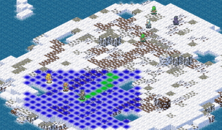
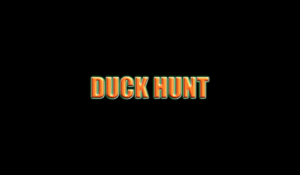
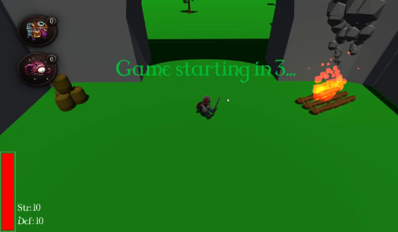

Turn-Based tactic
Unity | C#
Team project (size 4), Academic Final.
Final Fantasy Tactics inspired turn-based tactical game made with Unity Engine.
Scriptable Objects with Odin Inspector integration, player inventory and equipment, overlay tool tip, abilities/consumables cooldown and duration.
Youtube
GitHub

DuckHunter VR
Unity | XR Interaction Toolkit | C#
Team project (size 3), Academic.
Reimagining of the classic Duck Hunt for NES in VR, Oculus Quest Virtual Reality game using XR Interaction Toolkit.
XR Interaction Toolkit integration, placing of interactable objects in VR, ducks, duck spawner, targets and game modes.
Youtube
GitHub

WaveClear RPG
Unity | C#
Team project (size 3), Academic.
A* and Navmesh pathfinding, AI using State Machine, Behavior Trees and RayCast player detection applied in game made with Unity Engine.
GitHub